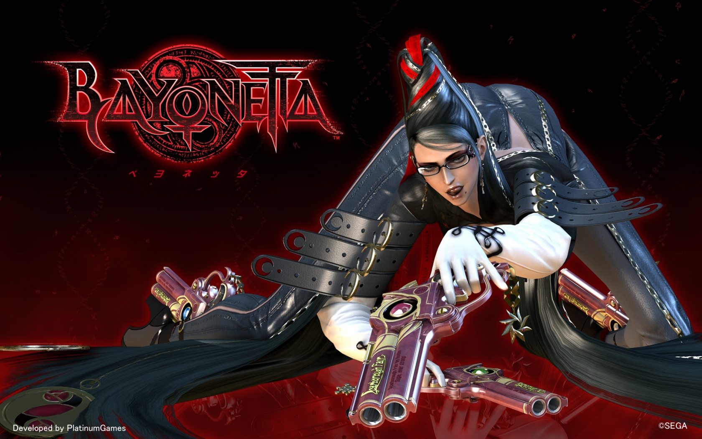
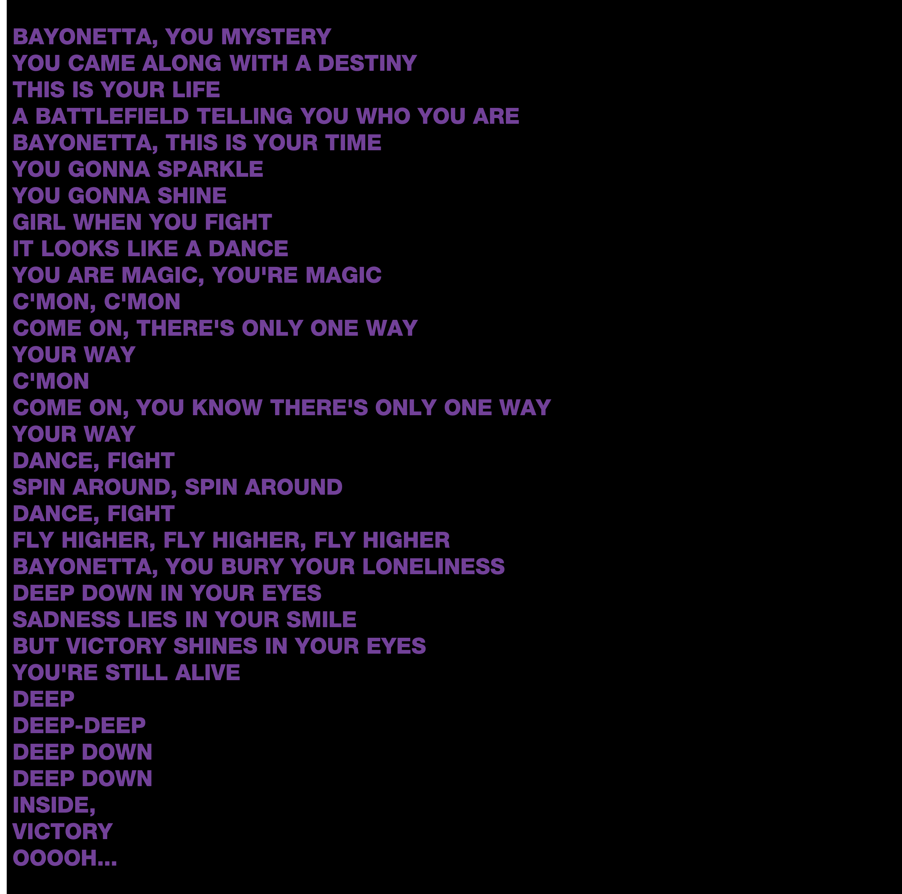
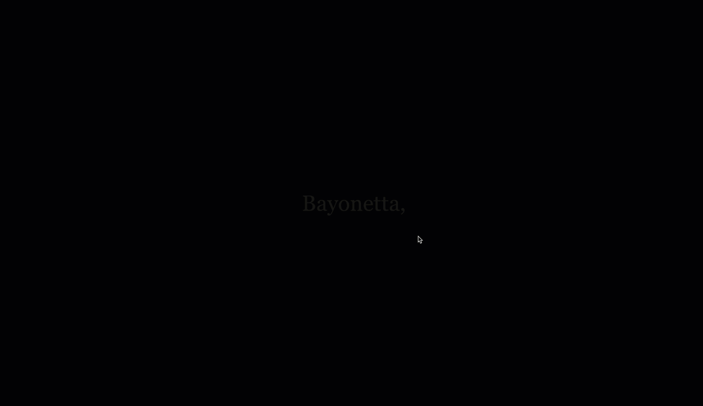
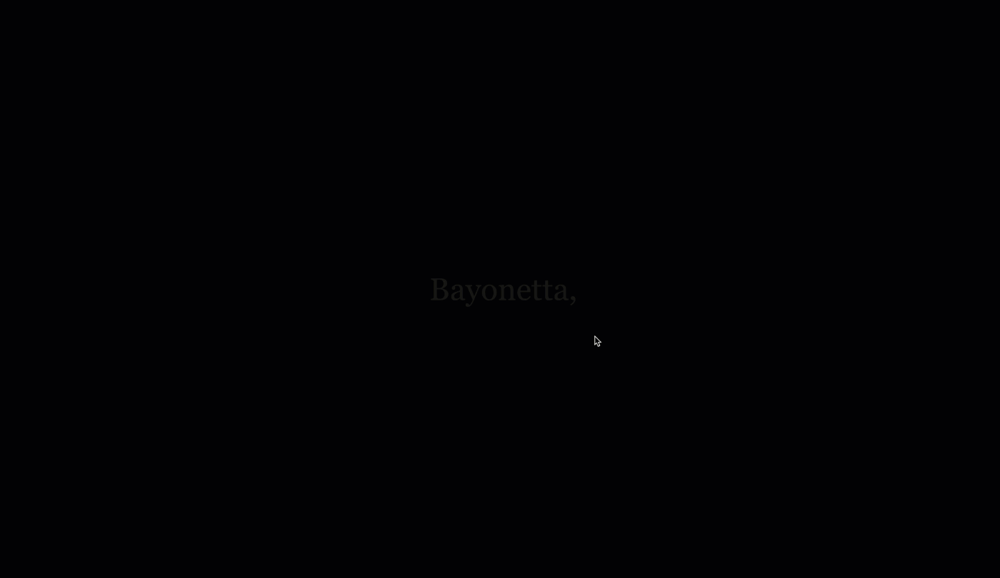

The Climax Reading
The Process
The Climax Reading is an interactive interface where the user is forced to mash the mouse clicks on it in order to have the ability to increase the shown words size and read them. The text is shown on the screen word by word, which goes by really fast in neutral, but the better you mash, the speed will decrease to ease your reading experience; both in size and speed.
Inspired by the climactic experience of playing Bayonetta, both in its visual and interactive dynamics and elements, where the player is able to summon demons her in ‘the climax’ segments, by mashing the controller’s buttons intensively. You get to watch the environment around get wiped off of enemies after the climax, not realizing how it actually went down since the player is so focused and tense during the buttons-mashing segment; zoning out, even. As I am playing the Bayonetta game myself, and get into ‘the climax’ segments, the physical interaction with the moment of mashing buttons to summon her demons, my whole upper body uncontrollably leans forward towards the screen, as my fingers and wrist are stamped to the controller’s buttons to make sure I get the maximum points from the climax’s mashing. At some points a break is needed after those mashing segments, it goes by so fast yet the time perception in the player’s head does not fully make sense when you see the environment wiped out when all you were focusing on is mashing those two buttons at the same time.
Another activity where I thought this mindset was present in was speed reading tests. Specifically, the type where they show word-by-word on the screen from whatever source of text, and the user has to test their reading speed, yet manage to keep up with the words as the speed increases.
A similar act was done in the Climax Reading, the words shown on the screen are from the Bayonetta official theme song’s lyrics, titled ‘Mysterious Destiny.’ Only the instrumental is played in the activity’s page, the lyrics are right in front of you; but tiny! The full song is barely two-minutes-long, but as it is played on a loop in the background while going through the Bayonetta intense, stylish, flashy, and climactic hack & slash segments, it is almost impossible to realize how many times the song looped in the background; could’ve even been hundreds.
.While you try and keep up with reading the song’s lyrics by increasing its text size and slowing down the speed intensity all by mashing, visual effects will take place all inspired by the Bayonetta game. ‘Witch Time’ is easily the Bayonetta’s franchise most iconic move. It is a simple mechanic of slowing down the entire environment around when you perform a perfect dodge from an enemy’s attack. Then, the area around turns purple, matching the color of the ‘magic gauge’ in the game.
That also happens in the background of the activity’s text shown; starting from the neutral state of pitch black, growing gradually to its climax of bright purple as you intensively mash. Another visual element that takes place during ‘Witch Time’ in the game is when the enemies around are floating slowly in time, and their figures slightly blur; all while Bayonetta walks feely around them to start executing stylish combos. This was made even more noticeable in the Climax Reading activity where the text is given an intense blurring effect that increases with mouse clicks mashing.
 .

Time to experience the best part; the Climax!
.

Time to experience the best part; the Climax!